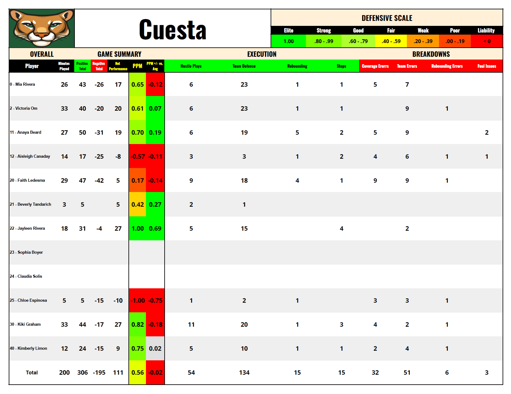

Program Tools
Staff Systems
This page expands the core systems from the coaching portfolio. Each section gives a deeper look at how Coach Fogarty organizes player development, scouting, recruiting, defensive accountability, program operations, leadership standards and player-development innovation.

01 — Development
Player Development Systems
Player Development Systems organize the teaching process from evaluation to daily skill work, film feedback, drill tracking and measurable improvement. This section shows how workouts, player plans and progress tracking are built so development is clear, repeatable and staff-ready.
02 — Evaluation
Scouting & Recruiting
Scouting & Recruiting resources show how opponent prep, personnel tendencies, roster evaluation and in-game organization are prepared for staff use. This section helps a coach understand how reports move from film study to practice planning, game prep and recruiting follow-up.

03 — DPAT
Defensive Performance Accountability Tracker
The Defensive Performance Accountability Tracker turns defensive effort, execution, rotations, scheme performance and accountability into measurable data. This section highlights how DPAT tracks player impact, game breakdowns, rankings and action leaderboards.

04 — Operations
Program Support
Program Support organizes the behind-the-scenes structure that helps a staff operate efficiently. This section covers operations planning, staff development, fundraising, recruiting calendars, year-round organization and daily program systems.

05 — Leadership
Coaching Philosophy
Coaching Philosophy resources explain how Coach Fogarty approaches leadership, relationship-building, accountability, staff alignment and player standards. This section shows the values and daily behaviors behind the systems.

06 — Innovation
The Archer
The Archer is a player-development innovation designed to improve shooting arc, release point, rhythm, touch and contested-shot preparation. This section connects the product to Coach Fogarty's teaching system and shows visual examples of how it is used.